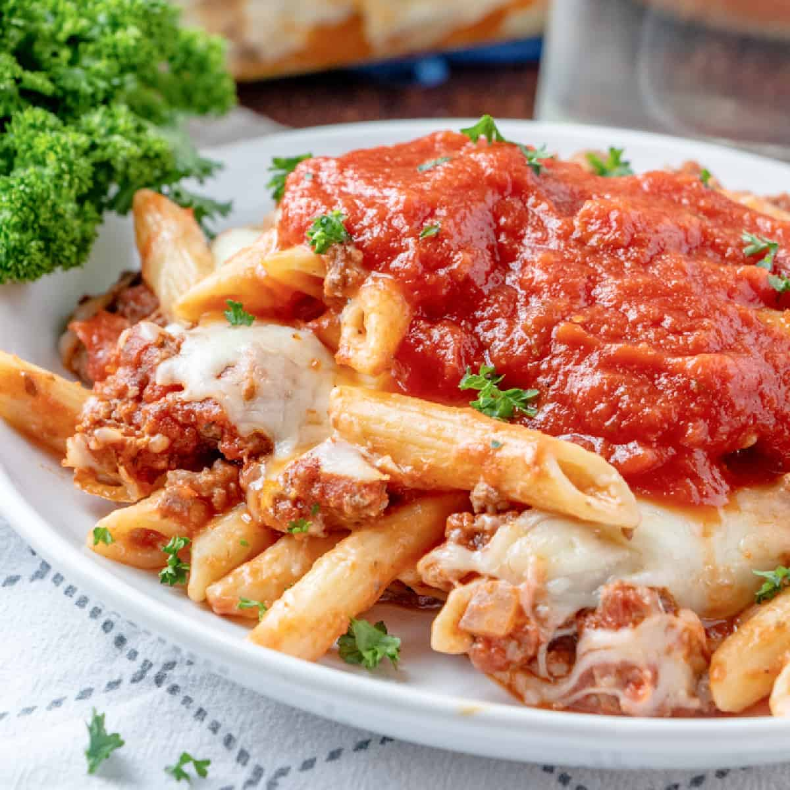

Baked Ziti Recipe

Description:
Ziti is a very popular tube shaped pasta. Ziti gets its name from the word
zita, which means bride. In Naples, Ziti is the classic pasta served at
weddings as the zita/bride's pasta. Ziti goes well with fresh, light sauces
like olive oil or a simple fresh tomato sauce.
Ingredients:
- 1 pound ground beef
- 32 ounce jar of your favorite spaghetti sauce
- 16 ounce jar alfredo sauce
- 1 pound penne pasta (or ziti or rigatoni)
- ½ yellow onion, diced
- 2 cups shredded mozzarella cheese
Steps:
- Preheat oven to 350F degrees. Spray a 9"x 13" baking dish with nonstick spray.
- Prepare pasta according to directions.
- In a medium sauce pan, brown ground beef with onion (if using).
- After beef is brown and crumbled, drain excess grease.
- Put back in pot and pour in one jar of spaghetti sauce. Keep mixture on low until pasta is done.
- When pasta is finished, drain excess water from pasta. You want the pasta as dry as possible.
- Put pasta back in large pot (with heat off) and pour in jar of alfredo sauce. Combine until thoroughly coated.
- Pour pasta mixture into bottom of 9"x 13" dish.
- Cover pasta with spaghetti sauce mixture.
- Sprinkle top with mozzarella cheese.
- Cover with aluminum foil and bake for 15 minutes.
- Remove foil and bake for another 15 minutes until cheese is melted and bubbly. Let rest for about 5 minutes after taking out of oven.
- Serve portions onto plates, and pour additional paghetti sauce on top (optional).